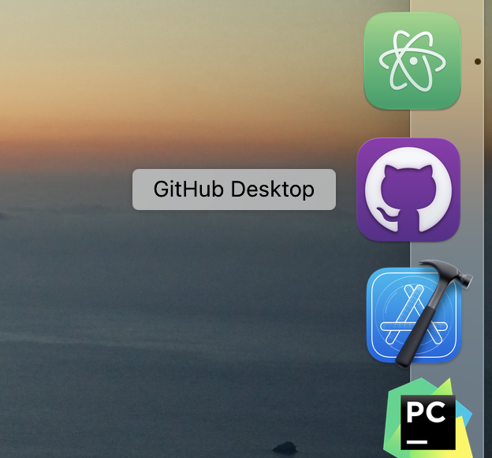

Thank you for taking the time to review my personal profile. My name is Daniel and I was born and raised in Melbourne. The Nanthathammiko family moved from Laos due to the Third Indochina War and the communist rule with many family members spreading across the world to countries such as Australia, France and the USA.
My upbringing was an interesting mix of traditional Lao and identifiably suburban Australian.
I have studied many different topics over the years such as Media and Communication and Spatial Science however I had always been more interested in learning on the job (which hasn’t been helpful in gaining any certification) which has made me a jack of all trades.
Band Practice - Image taken by Daniel Nanthathammiko
I thoroughly enjoy listening and playing music in which, I have been able to experience being a touring and recording musician in my 20’s.
My work over the past 12 years has been within the Spatial data industry from working on mining projects to developing systems that allow data collection in tough conditions.
Prior to the current scenario, I've been fortunate enough to travel the world for my current work as it takes me to all sorts of sites.
INTEREST IN IT
IT has always played an important part in my life on a personal and professional level. My interest in IT in a general sense began when I was in my early teens. My dad had just purchased a 486 CPU PC with a CD Rom and a 3.5” Floppy Disk. We only had a few games on floppy such as Indiana Jones and the last crusade and Wolfenstein (thanks to one of my uncles!) but had a CD Rom of the encyclopaedia Britannica which was super helpful throughout school.
When we upgraded from Windows 3.1 to Windows 95 on our next machine (IBM with a Pentium CPU), I was responsible for setting it up and getting it up and running. The time spent setting it up allowed me to lurk around the W95 install disk. To my surprise it had some easter eggs on there such as Pinball, Hover (the maze game) and a life changing video clip, Weezer’s Buddy Holly (shaped my musical tastes from a very young age!).
CAD on my laptop - Photo taken by Daniel Nanthathammiko
From there, my interest in IT and tech in general spiralled out of control and now I’m the go to guy to make things work, to understand systems at work and explain to the people I deal with how to utilise our systems in very complex and stressful settings.
I chose RMIT as I have previously studied here over a decade ago and it was a good environment for technically inclined studies.
I hope to gain a more updated and relevant understanding of the IT industry on a professional level as I have been sheltered from what other companies might be doing in this space and where I could be more efficient in my planning and execution of projects requiring IT consideration.
This role (and the role of a Solutions Architect in general) is one that will connect the commercial requirements of the business and bring it to life on a technical level, ensuring that the business can execute their business initiatives and remain focused on the core strategy or vision.
This position (and occupation in general) is very appealing to me as I already have the skill set to understand customers’ requirements and can align their requirements to a solution.
My experience also extends to implementing technical solutions on their sites, training end users and following through with regular checks to ensure systems are working as they should.
Sales meeting, China - Photo supplied by Daniel Nanthathammiko
This experience on the customer engagement side with onboarding very niche hardware is a good starting point for me.
Defining the occupation, I’m interested in working towards is helping my development to become a true all-rounder as it is plain to see an Enterprise Architect must possess a deep understanding of the technology that exists now, and which solutions would truly meet the customers’ demands.
To summarise the required skills required based on current advertisements, it is expected that a suitable candidate would have:
Enterprise domain expertise
Deep understanding of frameworks, current industry standards and trends, database knowledge
Cloud platforms and API integration
Security, authorisation management
IT Degree or similar
5+ years’ experience in relevant platforms to the employer
General programming capabilities
Experience and demonstrable AGILE practices
EXPECTED REQUIREMENTS?
Enterprise domain expertise – I have lightly touched on enterprise domain systems for many of my customers.
Most of my experience is identifying conflicts and issues with our software and ensuring it is performing on the clients’ systems without issue.
This does require lots of back and forth with varying IT departments and a general understanding of an end users’ permissions.
I have setup a Microsoft 365 Business Premium account at work to begin my own understanding of Microsoft’s Enterprise/Business suite of products which includes Microsoft Azure.
I’m constantly trying to figure out ways to streamline our efforts for better productivity as this is fundamental for any business.
FRAMEWORKS & INDUSTRY STANDARDS
I have a broad understanding of current IT systems trends however as I don’t have in-depth experience outside of my work experience or insight to a client’s full enterprise setup, my knowledge is very basic.
I will be ensuring that at every opportunity, I will have more in-depth discussions with my clients IT departments to round out my understanding.

CLOUD, APIs, SECURITY
As above, I will be working more in-depth with cloud-based platforms to understand the purpose and function. This should inform me on how best to utilise these tools to achieve positive business goals.
On the API integration and Security side, I plan to develop basic Web Apps that will require data to be pushed/pulled (low risk, openly available data to do simple things) and then further develop aspects such as logins to “personalise” aspects of information.
DEGREE & EXPERIENCE
This current course will begin to fill out my requirement of tertiary education. I am fortunate to already be employed fulltime by a large software/hardware development company (6 years already!) and counting.
My role is in a commercial capacity right now with a requirement for technical experience and skills however my goal will be to extend this into the software and systems development side over time to provide me with real experience.
PROFILE
MYERS-BRIGGS TESTS
Myers-Briggs Test Result - Screenshot by Daniel Nanthathammiko
A Debater (ENTP) is a person with the Extraverted, Intuitive, Thinking, and Prospecting personality traits.
They tend to be bold and creative, deconstructing and rebuilding ideas with great mental agility.
They pursue their goals vigorously despite any resistance they might encounter.
LEARNING STYLE TEST
You're a visual learner! You prefer to use pictures, images and spatial understanding to learn new material.
Visual learners should:
Take notes during class as writing things down helps you remember information
Use flow charts, mind maps and diagrams for note taking
Visualise ideas or facts as a picture before writing them down
Replace words with images, pictures, colour and other visual media
Use visual media such as colour and images to help you learn
Read material before you learn it
Learning Style Test Results - Screenshot by Daniel Nanthathammiko
SPEED TYPING TEST
Speed Typing Test Results - Screenshot by Daniel Nanthathammiko
These results suggest that I am somewhat of an average touch typer.
I have a high degree of accuracy in my touch typing.
I used this as a test for potential employers as this should directly relate to efficiency and accuracy in implementing code, scripting and so on.
What do the results of these tests mean for you?
Looking at the results from the Myers-Briggs test, learning style test and a Speed Typing Test, I was labelled a Debater that required a visual learning style with an average typing speed and a relatively good accuracy in typing.
I agree that I have a debating type personality. It has served me well to progress through much stagnation in the workplace and has helped me to overcome obstacles in commercial activity and in my personal life.
However, there is detriment to having a debating personality and it is one that I already recognise and have been actively working to ensure I am indeed a team player and move in the direction of a team (if they’re moving in the right direction).
The learning style test also confirmed that I prefer visual learning styles. This doesn’t necessarily mean in an educational setting as I find myself writing and drawing in meetings and discussions with clients to better grasp their requirements at a later time.
The Speed Typing test was one that was merely to show that I could push out text, html, css, python scripts in a very quick time frame due to my comfort levels in touch typing.
How do you think these results may influence your behaviour in a team?
I do not believe that there is any real negative impact from my current behaviour in a team setting. I’m a very collaborative person and generally enjoy mixing thoughts and ideas with others to come up with the best solution together.
There are times when I will take a leadership role when I know I can chorale everyone and move a team forward to deliver a solution but there are also times when I can be the team player because the most important task is to deliver a positive result.
Sales meeting, USA - Supplied by Daniel Nanthathammiko
How should you take this into account when forming a team?
Sometimes we don’t get a choice in how a team is formed and what personality/ideological conflicts will arise because of this. I will always maintain in the forefront of my mind that professionalism and deliver of result is number one.
My goal will always be to push everyone to offer their best in a group setting regardless of the role I will play.
PROJECT IDEA
"A Web App to analyse spatial data regardless of file type or source and create a deliverable"
PARSE THE PARCEL
Mobile Parse the Parcel is a Web App that will convert any spatial data with any extension into a deliverable needed for a low fee per conversion.
The consumer base this product will target are those that are not “experts” in spatial data but occasionally need to handle and utilise this data.
Parse the Parcel App - Image created by Daniel Nanthathammiko
Parse the Parcel will allow these industries to work quickly without having knowledge on how to handle data.
Industry standard deliverables would be available to select from such as PDF, 3D PDF, DWG/DXF, LAS/LAZ, PLY, OBJ, CSV, TXT, PTS etc.
An example of this would be real estate agents collecting 3D coloured point cloud data from their LiDAR enable phones and wanting to create 3D visuals and floor plans without a fuss.
They would simply log in to our Web App after creating an account, upload the data and receive an email with a link to the deliverable.
A deliverable in this case could be a 2D Plan view PDF with dimensions and 3D perspective views of the home they would like to sell with volumes etc.
Another example would be construction site workers needing floor levels on a slab.
They might receive an email with a DWG file with no way to view and print it to a plan as it is a last-minute amendment.
Using our service, they could upload the DWG and receive a 2D plan view with RL’s and grades on the slab based on the DWG file.
MOTIVATION
Mobile Parse the Parcel is an idea I have often wished existed and was easily accessible at a low cost.
My in-depth years and experience in the spatial data collection industry has informed my decision to push this idea forward as there is nothing in the space that would be system/device agnostic (majority of CAD packages install on Windows only for example) and would be simple enough for the layman to receive data they want and need.
Most of the time, people don’t really know what deliverables they need and so rely heavily on data professionals to hold their hand (whilst charging them an arm and a leg).
This wouldn’t be a replacement to existing CAD packages as the suer won’t have the ability to truly modify data however, we will give the user the ability to view their raw data upload in something similar to the Potree Viewer https://github.com/potree/potree to ensure the data is acceptable.
Another reason this Web App should be created is because traditional CAD packages are super expensive, limited to computers and having a steep learning curve to extract suitable deliverables.
A quick search shows that AutoCAD have a web-based app however upon investigation, it is still very much a complex CAD setup and not really focused on the non-expert market.
Fundamentally, Parse the Parcels mission as a Web App will focus on simplicity of usage and cost effectiveness for the customer.
DESCRIPTION
Mobile Parse the Parcel will enable a seamless digital workflow for those not equipped to handle 3D spatial data by providing them a way to utilise and convert data formats without requiring the software, enable usage on effectively all devices.
Users would need to sign up for a free account via our Web-App UI to start converting files.
Once logged in, they can setup their customer profile including their company address, details such as phone number/email and company logo.
This would be used for PDF’s being generated on our platform to give customers a professional output.
A user can create “Projects” to upload data to and download data from.
Each project is sharable via a link that the account owner can generate and send.
This link would remain active for 7 days or if the project is live and still required.
The Web-App itself would not allow for any in-depth processing of the data; it will only represent the data “as is”.
There would be scope for “filtering” based on pre-defined settings if the data set is a point cloud (from a mobile phone for example) to minimise support requirements.
As this is a tool for a non-expert, it is wise to disable any in-depth editing.
Most users would be uploading file types such as DWG/DXF, ASCII CSV/TXT, LAS/LAZ, PLY and so our imports will initially cater to the required data formats but would allow a custom import for those a little more advance (an option that would allow a user to set headers for the data for example).
On the deliverable side, users can export industry standard files formats.
Parse the Parcel App Plan View - Image created by Daniel Nanthathammiko
BUSINESS MODEL
Stripe Payments Site - Screenshot by Daniel Nanthathammiko
Commercially, the user would receive x number of free uploads and/or will have y amount of cloud storage before they are forced to pay for conversions/deliverables.
This will be dependent on my costs.
The fee itself would be low such as $5 for a PDF floor plan and 3D PDF for dynamic 3D visuals of the draped PLY files.
The user would not need to pay for a continuous subscription (unless they opt to for volume discounts) but would pay as you go
This gives the users a feeling of freedom which is useful when other similar apps require yearly billing.
A subscription model would be available but not the standard as not all users will want to generate a volume of deliverables per month.
If a user wants to handle large datasets (100mb plus), we will have a message that states that the data is large and may take a long time to process unless they pay for extra computing power.
This would also trigger a greater download fee as the backend will need to provide more computing power to convert these datasets.
The Web-App would guide the user through the process unless this feature is turned off in “Account Settings”.
Within the settings section, default options/parameters could also be set, for example: setting uploads to PLY and DWG only and deliverables to 3D PDF and PDF 2D plans area values.
This would streamline a user’s interaction with the Web-App, limiting wasted time and automating the process of data conversion as they will then just download the deliverable right after uploading.
A feedback form would be available for requests and upgrades.
TOOLS & TECHNOLOGY
On the customer side to use the Web-App for its core purpose, you will only require a device with internet connectivity, a web-browser and a copy of the file requiring conversion.
On the Web-App end, an essential service such as AWS (Amazon Web Services) will be required for their remote cloud computing abilities.
AWS scalable setup must be considered and will be dependent on the number of subscribers, data being processed/managed at any given time.
On the payment side, a service such as Stripe Billing will be required to provide me invoice-based payments (one off conversions and downloads) as well as subscription based billing for those wanting volume uploads, conversions and downloads.
Amazon Web Services - Screenshot by Daniel Nanthathammiko
SKILLS REQUIRED
Terminal Screen - Screenshot by Daniel Nanthathammiko
I would need to thoroughly understand languages such as Python for simple data conversion, Javascript as many open-source projects that will enable me to view and interact with the data such as Harp.gl and Potree Viewer will require that understanding MySQL for database design and management for customer information, account information as well as HTML, CSS, Javascript (as mentioned previously) for building the UI.
A deeper understanding of Terminal commands for linux and unix systems will be incredibly helpful in setting up and deploying and managing this Web-App as well.
Understanding how AWS and Stripe will work together will also be essential in ensuring a seamless experience with the Web-App.
Since AWS for remote cloud computing has been around for quite a while, there are many reference documents as well as general AWS customer support to ensure I can bring to life the backend.
Learning the required languages will be covered within my Undergrad at RMIT which is extremely beneficial.
Harp.gl open source project - Screenshot by Daniel Nanthathammiko
OUTCOME
Success for this project will be measured by customer usage of the Web-App service.
If we have repeat or subscribers of the product and it pays for itself, I will consider this a success.
Successful usage for a client would be receiving a useful deliverable from a format that they could not utilise in its original state.
With significant user uptake, it could disrupt traditional spatial data management services and applications by providing a low-cost alternative for those requiring simple deliverables on the day.
Would this take away from AutoCAD or other CAD software users? No.
But that is not our intention at all.
Mobile Parse the Parcel is here to bring simplicity to spatial data conversion without the weight and extensive knowledge of a full application or data specialist.
REFERENCES
W3schools.com 2021, CSS Tutorial, viewed 14 August 2021, <https://www.w3schools.com/css/default.asp>
Stack Overflow 2021, Stack Overflow - Where Developers Learn, Share, & Build Careers, viewed 14 August 2021, <https://stackoverflow.com/>
GitHub 2021, GitHub: Where the world builds software, viewed 14 August 2021, <https://github.com>
SEEK 2021, [online] <https://www.seek.com.au>
16personalities.com 2021, Free personality test, type descriptions, relationship and career advice | 16Personalities, viewed 14 August 2021, <https://www.16personalities.com/>
Matrix, Q., 2021. Quiz: What's your learning style? | Matrix, viewed 14 August 2021, Matrix Education. <https://www.matrix.edu.au/quiz-whats-your-learning-style/>
Speedtypingonline.com 2021, Free Online Typing Test - SpeedTypingOnline, viewed 14 August 2021, <https://www.speedtypingonline.com/typing-test>
Amazon Web Services, Inc 2021, HPC FAQs - Amazon Web Services, viewed 14 August 2021, <https://aws.amazon.com/hpc/faqs/>
Stripe.com 2021, Online payment processing for internet businesses – Stripe, viewed 14 August 2021, <https://stripe.com/au>
GitHub 2021, GitHub - heremaps/harp.gl: 3D web map rendering engine written in TypeScript using three.js, viewed 14 August 2021, <https://github.com/heremaps/harp.gl>
GitHub 2021, GitHub - potree/potree: WebGL point cloud viewer for large datasets, viewed 14 August 2021, <https://github.com/potree/potree>